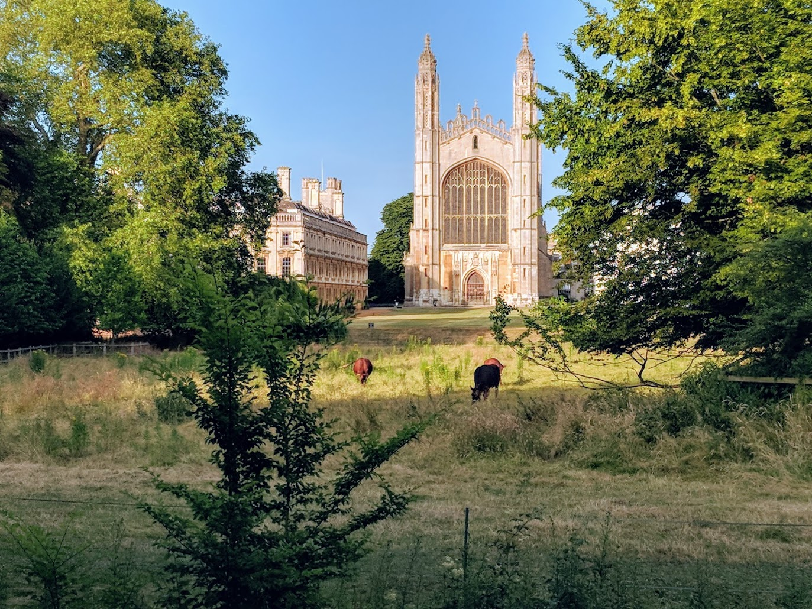
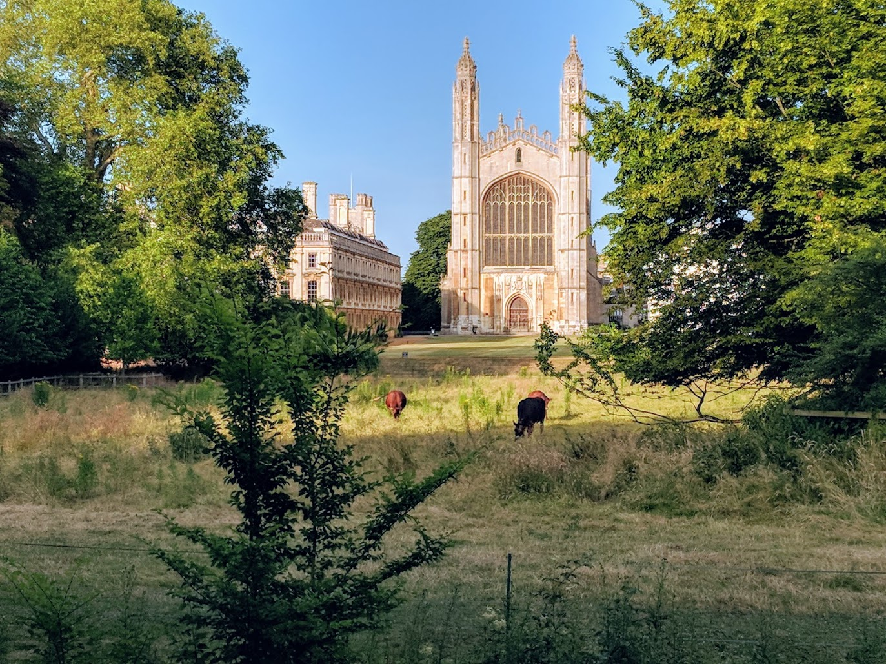
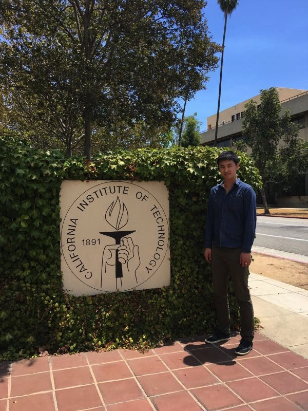

I grew up in Nanjing (南京), a city on the bank of Yangtze River with historical records dating back to at least 500 BC. At the age of 15, I received a SM1 Scholarship from the Ministry of Education of Singapore. The scholarship covered the tuitions and living expenses while I studied for A-levels at Victoria Junior College (high school equivalent) in Singapore.
Although I've always had a passion for science, my interest in astronomy really developed after joining the Astronomy Club at Victoria Junior College. We often went on all-night-long Messier marathons with our 8-inch Schmidt–Cassegrain telescope. We also studied astronomy and physics together on a weekly basis and participated in astronomy-related competitions.
I went to University of Cambridge in UK as an undergrad in 2010. Thanks to the broad curriculum of the Natural Sciences Tripos, I also discovered interests in Geology and Evolutionary Biology. I vividly remember that we had the chance to examine one of ~100 Martian meteorites during a Part IA Geology class. The Martian origin of these meteorites were established by comparing the in-situ measurement from Mars rovers and elemental and isotopic ratio of the minerals and gas inclusions in these meteorites. During another class in my sophomore year, I was absolutely astonished when I first heard the theory of "vegetation rafting" that the ancesters of New World monkeys had to sail from Africa to South America on a broken tree trunk! How did the trip begin? Fleeing from predators? How did they get there? Trade wind? I was fascinated by how something so improbable could happen given the equally unfathomable length of evolutionary timescales.
 

Left: The Cavendish Laboratory after snow; Right: Cows on the pastures of Kings College, University of Cambridge
I ended up majoring in Physics and graduated with First Class Honours, but my interest in astronomy, geology and evolution together led me to interdisplinary study of Exoplanets. In 2014, I joined MIT Department of Physics and Kavli Institute for Astrophysics and Space Research. I started working on exoplanets with Prof. Saul Rappaport and my advisor Prof. Josh Winn. In 2016, Josh decided to move to Princeton University and I moved with him. I spent three years at Princeton as a visiting graduate student at the Department of Astrophysical Sciences. After receiving my Ph.D in Physics from MIT in 2019, I was awarded the GPS Chair's Fellowship from the Division of Geological and Planetary Sciences at Caltech. I have been working at Caltech since then.

Left: At Sagan Workshop, Caltech, 2016; Right: Dinner at Einstein's house with Prof. Doug Lin, Mrs Lin, Prof. Shude Mao and other Chinese scholars, 2017.